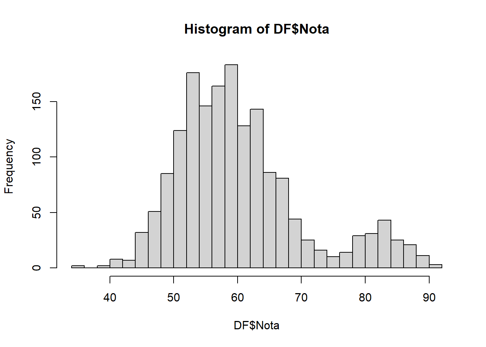
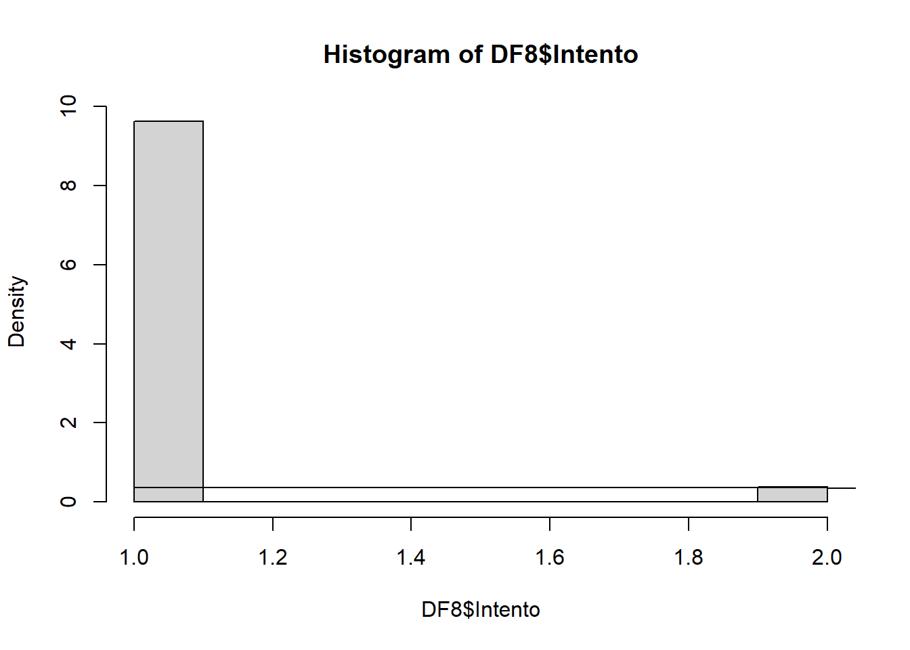
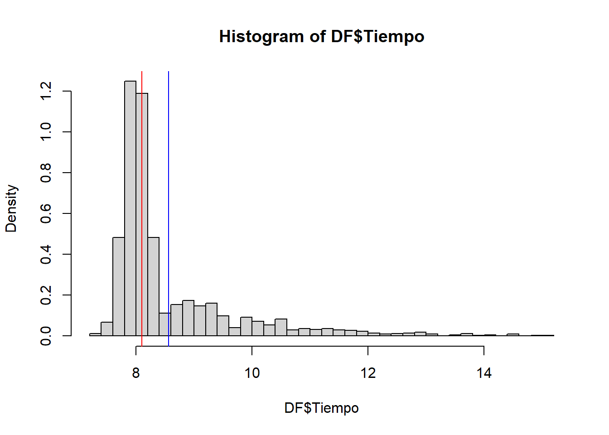
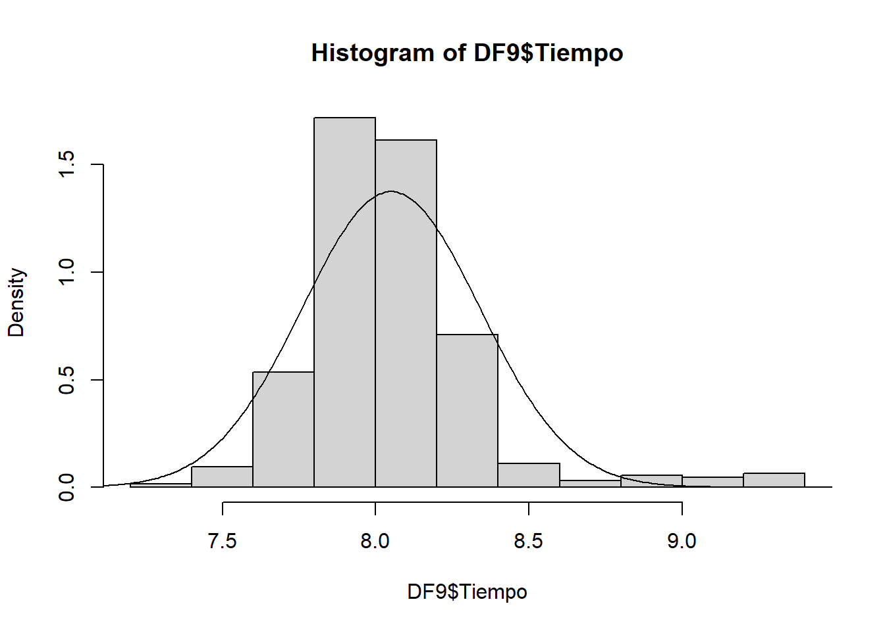

library(readr)
library(dplyr)
Attaching package: 'dplyr'The following objects are masked from 'package:stats':
filter, lagThe following objects are masked from 'package:base':
intersect, setdiff, setequal, unionNombre: Jeffrey Monja Castro
library(readr)
library(dplyr)
Attaching package: 'dplyr'The following objects are masked from 'package:stats':
filter, lagThe following objects are masked from 'package:base':
intersect, setdiff, setequal, unionr <- function(x){
return(round(x, digits = 2))
}DF <- read_csv('DFB.csv')Rows: 1690 Columns: 8
── Column specification ────────────────────────────────────────────────────────
Delimiter: ","
chr (1): Tipo
dbl (5): Id, Intento, Nota, Tiempo, Duracion
lgl (2): Aprobado, Distinguido
ℹ Use `spec()` to retrieve the full column specification for this data.
ℹ Specify the column types or set `show_col_types = FALSE` to quiet this message.DF# A tibble: 1,690 × 8
Id Tipo Intento Nota Tiempo Aprobado Distinguido Duracion
<dbl> <chr> <dbl> <dbl> <dbl> <lgl> <lgl> <dbl>
1 1137 C 1 57 7.24 TRUE FALSE 0.230
2 619 B 1 67 7.33 TRUE FALSE 0.322
3 139 B 1 69 7.36 TRUE FALSE 0.358
4 1125 C 1 50 7.39 FALSE FALSE 0.388
5 250 B 1 62 7.40 TRUE FALSE 0.395
6 80 B 1 65 7.42 TRUE FALSE 0.410
7 195 B 1 60 7.42 TRUE FALSE 0.412
8 760 C 1 62 7.46 TRUE FALSE 0.456
9 161 C 1 58 7.47 TRUE FALSE 0.465
10 518 C 1 60 7.50 TRUE FALSE 0.492
# ℹ 1,680 more rowsp1 <- 6*5*4
p2 <- 6*5*4*3*2
N <- 6
M <- 3
n <- 3
r(dhyper(3, N, N-M, N))[1] 0.24Por dato 0.61
DF %>% filter(Tipo == 'B') -> DF2p <- mean(DF2$Nota)
p/100 -> p
p[1] 0.6304153#valor esperado
100*p[1] 63.04153#desviación
r(sqrt(100*p*(1-p)))[1] 4.83DF %>% filter(Tipo == 'A' & Nota >= 55) -> DF3
DF %>% filter(Tipo == 'A') -> DF4
# Jalar
p1 <- nrow(DF3)/nrow(DF)
p2 <- nrow(DF4)/nrow(DF)
p1 - p2[1] 0#Mención destacada
DF %>% filter(Tipo == 'A' & Nota > 75) -> DF5
r(nrow(DF5)/nrow(DF4))[1] 0.95# Exactamente 75 pts
DF %>% filter(Nota == 75) -> DF6
prob_75 <- nrow(DF6)/nrow(DF)
r(prob_75)[1] 0# Bayes
DF %>% filter(Nota == 75 & Tipo == 'A') -> DF7
p_A_itersec_75 <- nrow(DF7)/nrow(DF)
p_A_itersec_75/prob_75[1] 0.4summary(DF$Nota) Min. 1st Qu. Median Mean 3rd Qu. Max.
34.00 54.00 59.00 60.74 65.00 91.00 hist(DF$Nota, breaks=30)
mean(DF$Nota)[1] 60.7426DF %>% filter(Nota>= 55) %>% select(Nota) %>% count()/nrow(DF) n
1 0.7118343DF %>% filter(Tipo == 'B' & Nota >= 55) -> DF8
DF8# A tibble: 603 × 8
Id Tipo Intento Nota Tiempo Aprobado Distinguido Duracion
<dbl> <chr> <dbl> <dbl> <dbl> <lgl> <lgl> <dbl>
1 619 B 1 67 7.33 TRUE FALSE 0.322
2 139 B 1 69 7.36 TRUE FALSE 0.358
3 250 B 1 62 7.40 TRUE FALSE 0.395
4 80 B 1 65 7.42 TRUE FALSE 0.410
5 195 B 1 60 7.42 TRUE FALSE 0.412
6 899 B 1 63 7.51 TRUE FALSE 0.500
7 1170 B 1 69 7.51 TRUE FALSE 0.504
8 206 B 1 68 7.55 TRUE FALSE 0.547
9 804 B 1 67 7.55 TRUE FALSE 0.548
10 371 B 1 67 7.56 TRUE FALSE 0.558
# ℹ 593 more rowshist(DF8$Intento, prob=TRUE)
lines(dpois(0:2, 0.96))
# media teórica
r(1/0.96)[1] 1.04# promedio empírico
r(mean(DF8$Intento))[1] 1.04hist(DF$Tiempo, breaks = 30, prob=TRUE)
abline(v = mean(DF$Tiempo), col = 'blue')
abline(v = median(DF$Tiempo), col = 'red')
nrow(DF[DF$Tiempo >= 7.75 & DF$Tiempo <= 8, ])/nrow(DF)[1] 0.287574DF %>% filter(Tipo == 'B') -> DF9
Xs <- seq(1, 100, by = 0.01)
hist(DF9$Tiempo, breaks=10, prob=TRUE)
lines(Xs, dnorm(Xs, 8.05, 0.29))
DF %>% filter(Tipo == 'A') -> DF10
p <- nrow(DF[DF$Tipo == 'A' & DF$Duracion < 1,])/nrow(DF10)
dbinom(1, 100, p)[1] 4.539624e-33